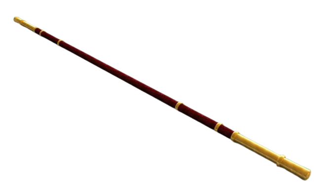
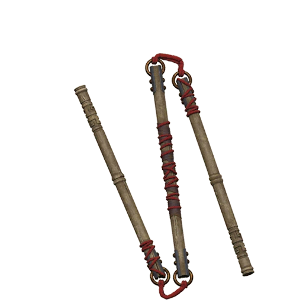

Bang - Bastão Chinês

O bang (pronuncia-se bahng) é
possivelmente a mais básica das armas chinesas antigas. Trata-se
de longo cassetete em forma de bastão feito de madeira ou aço. É
usado nas artes marciais chinesas e é uma arma letal nas mãos de
um especialista em seu uso.
A dança de Shen Yun de nome Wu Song luta contra
um tigre foi inspirada num romance clássico, Os bandidos do
pântano, e é uma das histórias mais famosas na qual o bang é
usado. Infelizmente, o bastão de Wu Song se quebra e ele
fica desarmado frente ao feroz tigre. Mas não temam, pois
Wu Song matou o tigre com suas próprias mãos.
Em Jornada para o Oeste, o Rei Macaco leva um bastão dourado que
anteriormente havia sido um enorme pilar usado para sustentar o
mar. No romance, esse bang pesava milhares de quilos e, ainda
assim, depois de encolhido, pôde ser guardado atrás da orelha do
Rei Macaco; ele podia se transformar em qualquer coisa que o Rei
Macaco quisesse.
Sansetsukon

Sansetsukon (em chinês:
sanjiegun, 三節棍 , sān jié gùn), é um
bastão de três seções originário da China, que consiste de três
bastões de madeira ou metal conectados por anéis de metal,
correntes ou corda. Constituindo-se numa versão maior e mais
complicada do famoso nunchaku, os bastões podem ser girados para
ganhar impulso e desferir um golpe devastador, ou pode ter suas
articulações usadas para golpear por cima ou ao redor de um escudo
ou outro bloco defensivo.